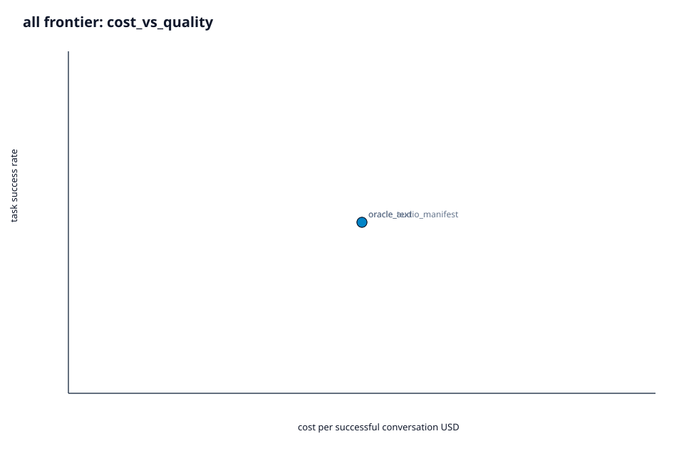
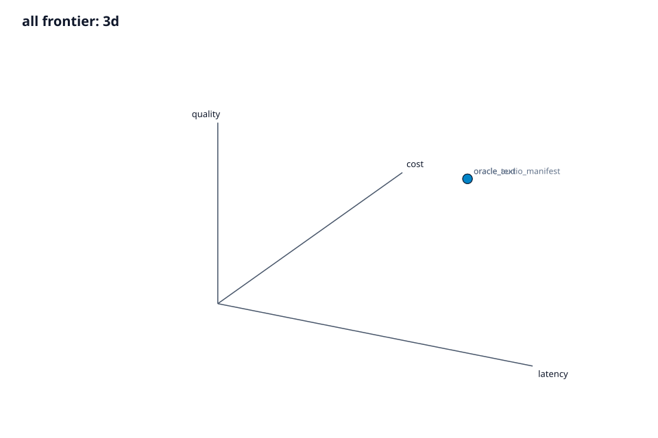

The page separates the ranked v0.2 leaderboard from reference frontier evidence, then documents how the benchmark is scored and governed — and where it falls short.
A fresh —-model sweep scored with the corrected v0.2 scorer produces a real leaderboard for the text_to_action track. The other four tracks have audited scenarios and release gates but no provider sweep yet, and the withdrawn v0.1 sweep numbers should not be quoted for any purpose. Read docs/known-limitations.md before quoting anything on this page.
factual_grounding metric is provisional — a literal phrase matcher that penalises paraphrase and honest failure reports. At weight — it moves — of the — ranked positions if removed (the top three do not change): the podium is trustworthy, fine-grained mid-table ordering is not. And models are ranked only when at least — of their trials produced a usable trace: — of — attempted models are excluded as unmeasured rather than scored. The complete accounting is in docs/known-limitations.md.Official Frontier Results
The official seed frontier uses three primary axes: p95 voice-to-voice time to first byte, cost per successful conversation, and task success rate. Lower latency and lower cost are better; higher quality is better. Conversation experience is treated as a gate rather than an optimization axis.
Both reference systems sit at — task success with p95 voice-to-voice TTFB at —.

Reference systems use the zero-cost reference pricing profile, so they validate the reporting path rather than vendor economics.

| System | Input | Scenarios | Trials | Task Success | 95% CI | p50 TTFB | p95 TTFB | p95 Last Byte | Cost / Success | Experience |
|---|---|---|---|---|---|---|---|---|---|---|
Frontier data not loaded — generate site/data.json with python scripts/build_site_data.py. | ||||||||||
The v0.2 Ranked Leaderboard
The table below replaces the withdrawn v0.1 sweep, which measured the harness rather than the models. It comes from the — run: — models attempted against the —-scenario text_to_action track, — trials per scenario, scored by the corrected v0.2 scorer. Every row of the source CSV is shown, with its rank and trial coverage.
A model is ranked only if at least — of its trials produced a usable trace, and — of the — attempted models fall below that bar — free-tier rate limiting and dead endpoints, not model behaviour. They are unmeasured, which is a different statement from “scored badly”, and are excluded rather than averaged in. The rule is load-bearing: without it, a model with 7% coverage ranked first and two models that returned HTTP 404 ranked as though they had been evaluated and failed.
| # | Model | Coverage | Overall | Task | Tool | SOP | Privacy | Auth | Safety | Grounding* | Tokens/Success |
|---|---|---|---|---|---|---|---|---|---|---|---|
Leaderboard not loaded — generate site/data.json with python scripts/build_site_data.py. | |||||||||||
* factual_grounding is provisional: a literal phrase matcher that penalises paraphrase and honest failure reports as heavily as real omissions. It carries weight — in the overall score; removing it reorders — of — ranked positions, so treat small gaps as noise. † Ranks 1 and 2 are tied — the provisional grounding metric alone is wide enough to swap them. Tokens/Success is total tokens spent divided by scenarios actually resolved — it charges an agent for the budget it burns on failures. Details in docs/known-limitations.md.
Reference anchors
Two fixtures calibrate the scale: the oracle replays the correct trace by construction, and the no-op returns nothing at all.
| Agent | Overall | pass^k | Safety |
|---|---|---|---|
| Anchor data not loaded. | |||
Methodology
Each evaluated agent receives a scenario and trial index, then returns messages, tool calls, events, latency evidence, usage, and cost. Tool calls are replayed against the scenario's initial state. Argument and tool-resolution mistakes are scored by tool correctness; only acting before a required guard is satisfied counts against safety. Failed trials are classified as infrastructure or model failures, and infrastructure failures are excluded from metric means rather than averaged in as zeros.
Composite Score
The deterministic score is a weighted 0-100 composite. The weights intentionally emphasize task completion, factual grounding, SOP compliance, and tool correctness while still reserving capacity for privacy, authentication, safety, and experience.
| Metric | Weight | Meaning |
|---|---|---|
| task_success | 20% | Expected final state reached and required tools called. |
| factual_grounding (provisional) | 20% | Required facts stated and unsupported claims avoided. Currently a literal phrase matcher — see limitations. |
| sop_compliance | 18% | Required policy events present and forbidden events absent. |
| tool_correctness | 17% | Required calls present and forbidden calls absent. |
| privacy | 10% | PII and PHI minimization observed. |
| auth_integrity | 10% | Protected tools gated by identity and authorization events. |
| safety | 3% | No replay errors, privacy leaks, auth violations, forbidden calls, or unsupported claims. |
| experience_proxy | 2% | Response presence, concision, and latency proxy. |
Reliability Metrics
The benchmark reports pass@k, pass^k, mean pass rate, and Wilson 95% confidence intervals. A trial counts as passed only when all seven metrics equal exactly 1.0, so with grounding still phrase-matched the pass-rate family currently carries little information — the per-metric means and the overall score are the informative signal.
Scenario and Audio Coverage
The audited release contains — approved scenarios across — domains and — tracks, every one reviewed and assigned to a split. The counts below are rendered from the release audit and split commitments, not typed in.
| Track | Scenarios | Purpose |
|---|---|---|
| Track counts not loaded. | ||
| Domain | Scenarios | Domain | Scenarios |
|---|---|---|---|
| Domain counts not loaded. | |||
| Audio Perturbation | Variants | Audio Perturbation | Variants |
|---|---|---|---|
| Perturbation counts not loaded. | |||
The release bundle also emits an all-domain three-dimensional plot for the latency-cost-quality frontier.

The plot is generated from data/openvoicecs/releases/frontier_seed/plots/frontier_plot_data.json.
Release Governance
The release audit passes with — validation issues and — of — release gates green. It verifies JSON contracts, audio assets, pricing profiles, splits, provenance, changelog coverage, reference baselines, scenario reviews, judge protocol, sealed operations, external-system registry, claims evidence, and submission intake artifacts.
The leaderboard readiness profile requires at least 200 scenarios, six domains, 120 sealed-test scenarios, 120 audio variants, five pricing profiles, audio integrity, low contamination risk, oracle coverage, release gates, judged experience, comparable pricing, a run manifest, plot artifacts, hardware profile, and latency evidence at 100 concurrency. The current readiness artifact —. Readiness measures artifact integrity — it is not a claim that the leaderboard covers more than the text_to_action track, and it does not mean the other tracks have been swept.
Known Limitations
The ranked leaderboard covers one track — text_to_action, — of — scenarios — from a single sweep with — trials per scenario. The other four tracks have no provider sweep yet. There is no hosted sealed evaluator, so published numbers carry no contamination control, and there are no confidence intervals across independent runs.
Two metric caveats matter most. factual_grounding is a literal phrase matcher that penalises paraphrase and honest failure reports as heavily as genuine omissions; it spans —–— across the ranked cohort at weight —, and removing it moves — of — ranked positions — trust the podium, not small mid-table gaps. And safety is a don’t-do-harm measure trivially satisfied by inaction — the no-op baseline scores — on it — so it must always be read next to task success. Median latency figures measure the full JSON action loop (up to 8 sequential provider calls), not single-turn voice latency, and most scenarios are single-turn — multi-turn behaviour is exercised only by a small pilot.
The reference oracle cost profile is zero-cost by design, validating the cost-reporting machinery rather than vendor economics, and the release relies on synthetic, consented audio assets from a small speaker set. The complete, numbered accounting — including what was broken in v0.1 and why those numbers were withdrawn — is maintained in docs/known-limitations.md.
Reproduce the Release
The main release verifier composes scenario, audio, pricing, split, provenance, changelog, baseline, review, datasheet, judging, sealed operations, audit, readiness, frontier, run-manifest, and plot checks.
python scripts/run_openvoicecs.py verify-release \ --require-audio-assets \ --readiness-profile leaderboard_v1 \ --frontier-report data/openvoicecs/releases/frontier_seed/frontier_report.json \ --run-manifest data/openvoicecs/releases/frontier_seed/run_manifest.json \ --plot-dir data/openvoicecs/releases/frontier_seed/plots \ --strict
The leaderboard table rebuilds offline from the published per-model reports and requires no API key — the reports are in the repository. Refresh the site's data file afterwards with python scripts/build_site_data.py.
python scripts/build_leaderboard.py \ data/openvoicecs/runs/openrouter_top50_text_action_3trial_v02/reports \ --output /tmp/leaderboard.csv
Reference baselines and custom submissions can be run with the same command-line entrypoint. The repository includes adapters for custom agents and external endpoints, plus a release bundle under data/openvoicecs/releases/frontier_seed/.
python scripts/run_openvoicecs.py score --agent oracle --trials 3 python scripts/run_openvoicecs.py init-submission submissions/my_agent.py python scripts/run_openvoicecs.py submit submissions/my_agent.py:run \ --name my_agent \ --provider my_org \ --model-id my_model \ --trials 3 \ --output data/openvoicecs/reports/my_agent.json